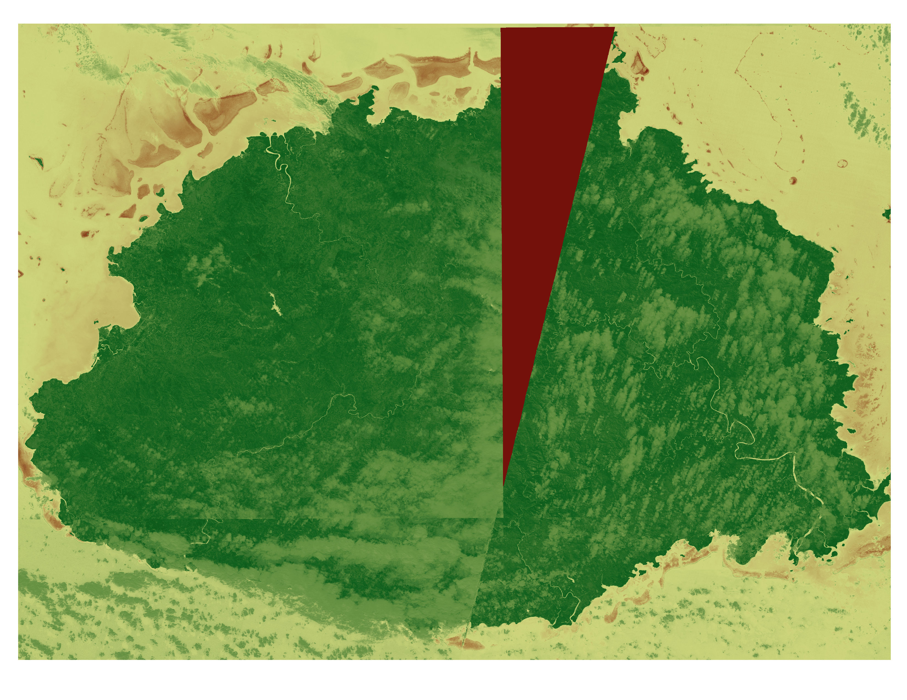

Land Use
Normalized Difference Vegetation Index (NDVI) is a indicator that uses near-infrared and red light to observe vegetation health. Vegetation that is healthier tends to reflect more near-infrared radiation and absorb more red light so the NDVI goes from 1 which is very healthy to -1 which is water or dead vegetation. This map is of the main island of fiji and what is interesting about it is how the whole island is relatively healthy when it comes to vegetation with a very limited part of the country having urban development which are the coasts.